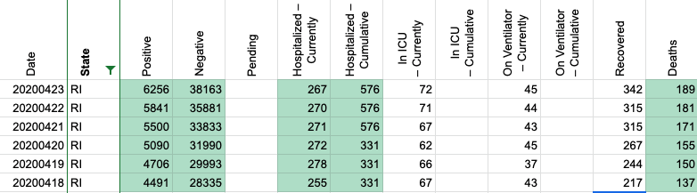
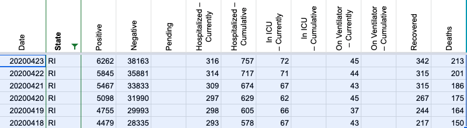
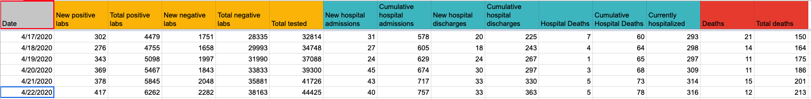
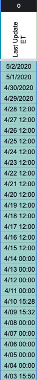
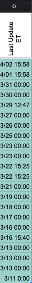
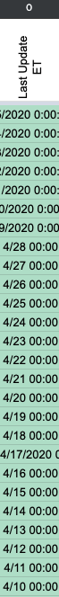
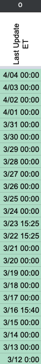

[RI] 4/19 Data inconsistency
Issue number 241
iservin opened this issue on April 20, 2020 at 5:34 pm
It appears today RI DOH retroactively changed their positive test numbers for Sunday 4/19.
They had originally published 4,706 positive tests as a total as of Sunday. Today the historical numbers for that date now shows 4,751 positive tests.
This is why the calculated new positive case number 384 is out of sync with the DOH’s published number of 339.
RI DOH’s day by day historical data: https://docs.google.com/spreadsheets/d/1n-zMS9Al94CPj_Tc3K7Adin-tN9x1RSjjx2UzJ4SV7Q/edit#gid=1998687529
There are noticeable revisions upwards between our data/what RI was reporting in the past vs. what RI reports now in the spreadsheet for 4/18-4/23. Updating pos, cur hosp, cum hosp, and deaths for those days (negs were also reported but were the same as our data). Our data before:  Our data after:  RI state data as of 5/6/2020: 
In addition, we noticed there was a one-day lag for positives for all the RI data, so changed the timestamps on the last updated field to 00:00 the day of the check for each day of data. Before:   After:  
Because there may be other discrepancies hiding in the RI DOH spreadsheet, I will write a script to compare the two csvs to catch any further potential changes
This issue has been automatically marked as stale because it has not had recent activity. It will be closed if no further activity occurs. Thank you for your contributions!